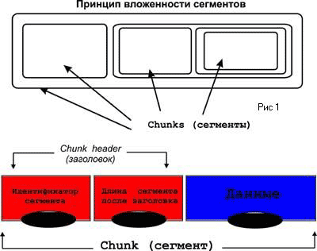
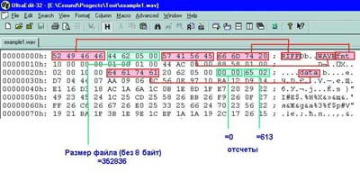
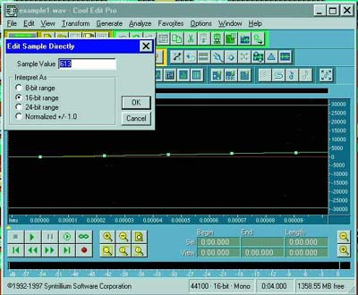

Форматы звуковых файлов Часть 1
Сергей Батов
Любая работа с цифровым звуком на компьютере предполагает, что
нам так или иначе придется иметь дело со звуковыми файлами. Запускаем
ли мы любимый Sound Forge, WaveLab, Sound Designer или программу
для многоканальной записи/сведения, - почти всегда представляется
возможность уточнить, с файлами какого именно формата предстоит
иметь дело, а по окончании работы - в каком формате сохранить ее
результаты. Конечно, если речь идет только об удалении "тишины"
в начале и в конце фонограммы, а настройки (опции) программы уже
должным образом заданы, то вопроса о формате как бы и не возникает:
когда надо делается "Open", когда надо - "Save". Но так бывает не
всегда. Поэтому предлагается уделить немного внимания тем способам,
которыми цифровой звук представляется на компьютере, то есть форматам.
Для начала вспомним, что файлами в компьютере называются наборы
данных, причем речь идет о совокупности, представляющей собою нечто
единое логически целое (то, как файл физически размещен на диске
- вопрос отдельный). Операционная система обеспечивает возможность
создавать, уничтожать, переименовывать файлы, а также копировать
или переносить с одного запоминающего устройства на другое. Причем,
например, папка (folder), отображаемая на экране компьютера в виде
желтого прямоугольничка, является объектом иного рода, хотя все
вышеописанные манипуляции операционная система поддерживает и с
ней. Дело в том, что формировать содержимое папки, добавляя либо
удаляя в ней файлы и другие папки, можно средствами самой операционной
системы, скажем, Windows. А вот изменить или просто просмотреть
содержимое файла удается только с помощью программы, специально
предназначенной для работы с файлами именно того типа, к которому
относится данный. Поэтому файлы, как правило, имеют расширения,
чаще всего, - трехбуквенные, которые пишутся через точку после основного
имени. Расширения помогают распознать тип данных, из которых состоит
файл и определить программу, способную с ним работать. Скажем, "readme.txt"
- текстовый файл, он открывается программой Notepad или Word, если
мы работаем в Windows.
Кроме того, операционная система стремится ассоциировать каждое
расширение с какой-либо программой, чтобы она автоматически запускалась,
когда мы щелкаем мышью по названию файла. Поэтому, кстати, при работе
в Windows стоит сделать видимыми расширения файлов, которые при
установке системы по умолчанию стыдливо спрятаны. (Это делается
в пункте меню "View" в папке "My computer").
Файлы с расширением .exe (а также .bat и .com) являются исполняемыми
модулями программ. Все прочие файлы будут данными, которые эти программы
должны обрабатывать. Одни из них являются для нас текстами, другие
- изображениями или звуками, для компьютера же это всего лишь цифры,
цифры и цифры. Способ организации числовых данных того или иного
типа и является форматом. Осмысленно работать с данными программа
может лишь руководствуясь спецификациями формата, то есть заранее
полагая, что число, находящееся на таком-то месте в файле, означает
то-то и то-то. Таким образом, формат - это еще и ключ, без которого
любой файл останется бессмысленным набором чисел. Попробуйте-ка
графическим редактором открыть звуковой файл!
Числа

Итак,
звуковые файлы. Как правило звук после оцифровки представляется
в виде последовательности отсчетов (или "семплов"), соответствующих
значениям амплитуды, взятым через равные промежутки времени.
Эти промежутки обратно пропорциональны частоте семплирования (квантования).
Такой способ представления звука называется импульсно-кодовой модуляцией
(PCM, Pulse Code Modulation).
Попробуем теперь осмыслить, как, вообще говоря, числа представляются
в компьютере. С момента появления дееспособных ЭВМ и по сей день
основой компьютерной логики и арифметики является двоичная система
счисления. Примером может служить простая электрическая цепь с лампочкой
и выключателем, электрическое реле, исправный семафор на железной
дороге и т. д. Важно, чтобы устройство имело всего два устойчивых
состояния: 1 - 0, или "да" - "нет".
Оказывается, это великая вещь! Ибо такое устройство может служить
носителем точной информации. Горшок с цветком мог находиться либо
отсутствовать на окне квартиры в Берне, куда направлялся профессор
Плейшнер, эта информация была конкретна и могла бы сохранить профессору
жизнь, сумей он воспринять ее.
Количество информации, несомое подобными устройствами, минимально
и считается равным одному биту. Очевидно, что в одном бите можно
закодировать два числовых значения: 0 и 1. Назовем наше устройство
"ячейкой" и рассмотрим пару таких ячеек. В совокупности они смогут
принимать состояния: 00, 01, 10 и 11. Это уже 4 числа (от 0 до 3).
Аналогично совокупностью из трех битов можно кодировать числа от
0 до 7 (всего 8 чисел). Добавление нового бита увеличивает емкость
системы вдвое, так что, располагая n битами, можно хранить числа
от 0 до 2n-1. 8 бит - это уже один байт, следующая единица измерения
информации. Диапазон чисел, хранимых в одном байте, от 0 до 255.
Идем дальше. Два байта или 16 бит образуют "слово" (word). Двухбайтовому
"слову" соответствует распространенный стандарт представления чисел,
обозначаемый int (integer, то есть - целое). В принципе, диапазон
значений здесь от 0 до 65535, но если мы хотим располагать отрицательными
числами, то одним битом придется пожертвовать, отведя его под знак
(0 это "+", а 1 это "-"). Это будет знаковый (signed) формат целых
чисел, в отличие от предшествующего (unsigned). Диапазон значений
int signed от -32768 до 32767. Забегая вперед, хочу отметить, что
именно таким образом представляются отсчеты амплитуды звукового
сигнала при 16-битной PCM-оцифровке. Если слово unsigned не присутствует,
то способ представления чисел по умолчанию считается знаковым.
Вся логическая архитектура компьютера, включая арифметику, способы
адресации (нумерации ячеек памяти) и измерения объемов информации,
строится на числах, равных степеням двойки: 8, 16, 32, 64 и т.д.
Теперь понятно, почему байты и килобайты связаны такими "неметрическими"
соотношениями: в килобайте не тысяча, а 1024 байт, а в мегабайте
1024 килобайт. Просто 1024 - это 210. Это из-за того, что основано
все на двоичной системе счисления. Почему так? Скорее всего потому,
что построить систему из элементов, способных устойчиво отображать
десять состояний вместо двух, было бы затруднительно, если вообще
возможно. Это относится, конечно же, к электронным системам, в механических
такое как раз встречается часто (вспомним легендарный арифмометр
"Феликс" и ему подобные устройства).
Строились ячейки памяти первых ЭВМ на электронных лампах (тогда
ячейку можно было вынуть, подержать в руках, починить при необходимости),
позже - из ферритовых колечек, а еще позже, как известно, на микросхемах.
Wav-файлы
Перейдем теперь непосредственно к звуковым файлам. Пожалуй, наиболее
распространенным сегодня является формат .wav, имеющий к тому же
солидный набор спецификаций, изрядно пополнившийся за последнее
время, поэтому начнем именно с этого формата и рассмотрим его наиболее
подробно.
RIFF
.wav-файлы (Waveform Audio File Format) относятся к категории RIFF-файлов.
RIFF-файл - это не то, что какой-то файл с расширением .riff. Напротив,
это словосочетание означает только способ организации данных внутри
файла. RIFF (Resource Interchange File Format - формат файлов передачи
ресурсов), введенный Microsoft и Intel, позволяет хранить и передавать
мультимедийные данные вкупе с соответствующими описаниями, параметрами,
форматами, разметкой для использования в семплерах и т.д. Иногда
RIFF сравнивают с базой данных, размещенной в одном файле. Независимо
от того, какая информация содержится в RIFF-файле, он обязательно
должен начинаться с заголовка (header), состоящего из символов 'RIFF',
и 4-байтового числа, равного длине остальной (после заголовка) части
файла в байтах. (Обратите внимание, что здесь используется уже 32-битное
(это тип double word - двойное слово) число с диапазоном значений
от -2 147 483 648 до 2 147 483 647. Всего же пока мы используем
лишь три типа данных: символьный (1 символ - 1 байт) и два числовых
(двух- и четырехбайтовые). Еще раз подчеркнем, что символьные данные
- суть те же числа, просто ими пронумерованы элементы таблицы символов
ASCII.
За восьмибайтовым заголовком располагается область данных RIFF-файла.
Эти данные составлены из элементов, называемых chunks, и являющихся
основой архитектуры RIFF.
Описать эти элементы достаточно легко, труднее назвать их по-русски.
Это постоянная проблема новых терминов, не имеющих пока (или уже)
укоренившихся русских эквивалентов. В самом деле, chunk - "кусок",
"колода", "толстый конец" (?!), и тому подобное. Волевым путем ввести
в обиход какое-нибудь "полено"? Но тогда возникнут трудности при
необходимости навести какие-либо справки в оригинальной англоязычной
документации. Поэтому мы будем употреблять это слово так, как оно
есть, иногда (там, где это удобнее) заменяя на его на "сегмент"
. Открывающий chunk восьмибайтовый заголовок состоит из символьного
идентификатора (4 байта) и 32-разрядного числа (4 байта), равного
длине этого сегмента в байтах, исключая при этом сам заголовок.
За заголовком следуют сами данные. Сегменты внутри RIFF-файла могут
располагаться друг за другом или быть последовательно вложены (Рис.
1). Это общее описание сегмента, на самом деле формат имеет некоторую
гибкость и какие-то элементы сегмента могут отсутствовать (кроме
идентификатора, разумеется).
RIFF WAVE
Существует обобщенное описание формата RIFF WAVE, но мы обратимся
к нему немного позже. Рассмотрим для начала конкретный пример, типичный,
быть может, для 90% случаев. Возьмем example1.wav с записью синусоиды
(440 Гц), продолжительностью звучания 4 секунды, моно, с оцифровкой
16 бит, 44100 Гц (PCM).
Структура файла будет такова:
[Заголовок (8 бит) с идентификатором 'RIFF'][идентификатор формата
'WAVE' (4 бита)][сегмент формата (format chunk)][сегмент данных
(data chunk)].
Ради единства стиля идентификатор 'WAVE' можно рассматривать как
некий "вырожденный" chunk (см. предыдущий пункт). Data chunk содержит
аудиоданные в виде последовательности отсчетов, а format chank -
информацию, необходимую для того, чтобы эти аудиоданные правильно
прочитать.
Более подробно:
| No |
Номер байта
шестнадцатеричный |
Номер байта
десятеричный |
Длинна в байтах |
Описание |
| 1 |
00h |
0 |
4 |
идетифекатор
"RIFF" |
| 2 |
04h |
4 |
4 |
длинна
файла (в байтах) без заголовка (-8) |
| 3 |
08h |
8 |
4 |
идетифекатор
формата "WAVE'' |
| 4 |
0Ch |
12 |
4 |
(начало
format chunk) идентификатор "fmt'' |
| 5 |
10h |
16 |
4 |
длинна
сегмента формата (format chunk size) без заголовка, здесь =
16 |
| 6 |
14h |
20 |
2 |
индекс
способа кодирования звука
(format tag) 1 = PCM |
| 7 |
16h |
22 |
2 |
число
каналов 1 = моно, 2 = стерео и т д |
| 8 |
18h |
24 |
4 |
частота
семплирования в гц |
| 9 |
1Ch |
28 |
4 |
среднее
число байт в секуду
(average bytes per second) |
| 10 |
20h |
32 |
2 |
количество
байт для одного семпла (отсчета) 1 = 8 бит, моно 2 = 8 бит,
стерео или 16 бит, моно 4 = 16 бит, стерео |
| 11 |
22h |
34 |
2 |
количество
бит для одного семпла (конец format chunk) |
| 12 |
24h |
36
|
4
|
(начало data chunk) идентификатор 'data'
|
| 13 |
28h |
40 |
4 |
длинна сегмента данных (length of chunk) без
заголовка
|
| 14 |
2Ch |
44 |
leighth of
data chunk |
аудиоданные
(sample data) |
Из этой таблички, в частности, видно, почему пустой, без аудиоданных,
wav-файл занимает на диске всего 44 байта. Величина сегмента формата
(format chunk) может меняться за счет добавления новых параметров.
Просто здесь приведена наиболее часто встречающаяся конфигурация.
Вообще говоря, структура format chunk во многом определяется способом
кодирования (представления) цифрового звука, который задается параметром
data tag.
Например, значения 257, 258 и 259 соответствуют форматам IBM mu-law,
a-law и AVC ADPCM. Величина average bytes per second определяет
количество байт, которое необходимо будет проигрывать каждую секунду.
Эта информация требуется прикладным программам при оценке размера
буфера в оперативной памяти. Он создается для обеспечения стабильной
работы в реальном времени, минимизации времени задержки (latency)
и т. д. Расчет происходит по формуле: (число каналов 5 частота семплирования
5 количество бит в одном семпле; разделенное на 8), причем результат
округляется до целого числа (последнее замечание имеет смысл, когда
используются "экзотические" значения количества бит, не кратные
восьми). В нашем примере это значение будет равным 88200.
По поводу представления аудиоданных (sample data) заметим, что
для монофайла отсчеты следуют один за другим, а в случае стереофайла
отсчеты, соответствующие разным каналам, следуют попеременно (левый-правый-левый-правый...),
причем для данного момента времени первым идет левый.
Все вышеизложенное имело целью не только дать общее представление,
но, скорее, - сообщить практически полезные сведения и побудить
к более свободному общению с компьютером, файлами и тому подобными
вещами. Ведь чтение спецификаций и описаний не имеет особого смысла
до тех пор, пока не имеется возможности увидеть многие вещи воочию
или даже почти буквально "потрогать руками" . Работа с обычными
прикладными программами не в счет: кто его знает, что там в них
происходит, когда мы щелкаем мышкой? Вот, собственно, начать "трогать
руками" и предлагается.
Опять числа
Прежде всего еще один, на этот раз совсем небольшой экскурс в область
компьютерной арифметики. Речь пойдет о шестнадцатиричных числах.
В повседневной жизни при подсчете чего-либо мы, дойдя до числа 10,
исчерпываем набор известных нам цифр и возвращаемся к единице, увеличив
перед тем количество десятков. То же самое и в шестнадцатиричной
системе, только набор цифр немного побольше: 0,1,...,9, а дальше
A=10, B=11, C=12, D=13, E=14 и F=15. Что это дает? Некоторые удобства
при работе с компьютерными числами, которые, как известно, состоят
из нулей и единиц и наглядность имеют минимальную. Оказывается,
двоичные числа достаточно легко и естественно переводятся в шестнадцатиричные
и наоборот. Это объясняется тем, что в основании шестнадцатиричной
системы лежит степень двойки (24=16).
Так, например, число, содержащееся в одном байте, может достигать
255, а в шестнадцатиричной системе оно записывается всего двумя
цифрами FF. Кстати, одно из положительных свойств этой системы -
компактность записи. Так как при размещении информации в компьютере
все так или иначе крутится вокруг байтов (с приставками: кило-,
мега-, гига-), то шестнадцатиричная система оказалась весьма кстати.
Конечно, в ней несколько непривычны правила арифметики (816+816=1016),
но нет никакой необходимости забивать себе ими голову! В стандартном
наборе программ на любом современном компьютере имеется калькулятор,
позволяющий работать во всех трех системах - двоичной, десятичной
и шестнадцатиричной (обычно для этого в пункте меню 'View' надо
переключиться из 'Normal' в 'Scientific'), а также переводить числа
из одной системы в другую. Надо только иметь в виду, что, во избежание
риска спутать шестнадцатиричные числа с десятичными, к первым приписывают
'0x' в начале либо 'h'- в конце ('0x109AF' или '109AFh').

Еще
нам потребуется одна небольшая программа, - из тех, что часто используют
хакеры в своих незаконных деяниях. Речь идет о шестнадцатиричных
редакторах (Hex editors). Существует несколько этих, совершенно,
кстати, легальных и доступных программ. Для Windows подойдут UltraEdit32
(адрес в Интернете: www.ultraedit.com) или Hedit32. Шестнадцатиричные
редакторы обеспечивают полный доступ к любому файлу на диске, позволяя
просматривать и исправлять содержимое любого(!) байта. (Можно исправлять
даже отдельные биты, пользуясь тем, что калькулятор в "научном"
режиме может переводить шестнадцатиричные числа в двоичные.) Обычно
это выглядит следующим образом (Рис. 2).
Слева идет колонка адресов (порядковых номеров) байтов в данном
файле, в центре - строки с парами шестнадцатиричных чисел, по 16
в каждой строке. Каждая пара отображает значение одного байта. В
правой колонке значение каждого байта строки представлено в символьном
виде. Если байт содержит символ, то мы именно его и увидим. Если
же этот байт является частью, скажем, 16-разрядного (2-байтового)
числа, то он будет отображен каким-либо случайным символом. Если
открыть наш файл example1.wav таким редактором, то можно воочию
увидеть все вышеуказанные идентификаторы сегментов ('RIFF', 'WAVE',
'fmt ', 'data'). Рассмотрим теперь 4 байта после 'RIFF'. Здесь должен
быть записан размер файла без восьми байт заголовка.
Следует иметь в виду, что в файлах формата RIFF WAVE при записи
чисел принят порядок следования байтов, именуемый little-endian.
Это означает, что младшие байты идут вначале и читать байты надо
справа налево (при этом пары шестнадцатиричных цифр в самих байтах
переставлять не надо). Это вызвано тем, что процессор от Intel именно
в таком порядке читает числа. Стандарт фирмы Motorola называется
big-endian, и чтение происходит слева направо. (Эти два стандарта
приходится иметь в виду при открытии звуковых файлов формата RAW,
об этом чуть позже). Итак, берем число теперь уже 5624416 и с помощью
калькулятора переводим в десятичную систему. Получилось 352836.
Вспомним про 8 байт заголовка, - итого размер файла выходит 352844.
Мы теперь уже знаем, что при 16-битной оцифровке каждый отсчет занимает
2 байта. Умножим их на количество отсчетов в секунду (44100), потом
на количество секунд (4) и на число каналов (1). Это будет размер
аудиоданных нашего файла (352800). Добавим 44 байта (см. замечание
после таблицы) и получилось то же число 352844... иначе и быть не
могло! Можем посмотреть и сами семплы (отсчеты). Пропускаем 4 байта
после идентификатора 'data' (Рис. 2) и выбираем двух байтовые числа:
0, потом 26516 = 61310, и т.д.

Есть
замечательная программа Cool Edit Pro. Она, в частности, показывает
значения отдельных отсчетов. Можем лишний раз убедиться в том, что
показывает она их правильно (Рис. 3). Еще бы, мы-то ведь читаем
"первоисточник"!
Какая от всего этого польза? Во-первых, шестнадцатиричные редакторы
дают возможность разобраться в любом формате настолько детально,
насколько это необходимо, потому что перечисление десятков спецификаций
в официальных документах, как правило, не слишком наглядно. Кроме
того, есть возможность редактирования сопровождающих данных типа
дат, текстовых комментариев, авторских прав и т.д. (не все программы-редакторы
звуковых файлов работают с одинаковым набором таких полей). Можно
редактировать и сами отсчеты, если кому-то придет это в голову.
Но самое главное - появляется уникальная возможность восстанавливать
утраченные данные!
Об этом мы еще поговорим в следующий раз, а, кроме того, продолжим
рассмотрение RIFF WAVE и перейдем к другим форматам.
(Продолжение следует